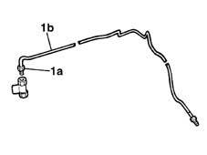

1042A42 CNG repressurizing PIPE from hose to three-way connector - R.R.
- Path
- Procedures > 10 ENGINE UNIT > 1042 METHANE GAS CANNISTER AND TUBES > 1042A METHANE GAS CANNISTER AND TUBES FOR RE-CHARGING > 1042A42 CNG repressurizing PIPE from hose to three-way connector - R.R.
- Kind
- repair procedure (removal / refitting; the operation number is the code)
- Applies to
- engines: 1.6 16v; production: fino a 05/04; only with equipment: BIPOWER and BLUPOWER
- Interactive page
- https://sloeber94.github.io/elrnDB-fMltpl/en/#/2891466
Applies to: engines: 1.6 16v; production: fino a 05/04; only with equipment: BIPOWER and BLUPOWER
 Removing
Removing
 Refitting
Refitting4450B11 WHEEL (one) rear - R.R.
1042E60 CNG CANISTER ASSEMBLY SHIELD/PROTECTION / - R.R.
1042A46 THREE-WAY CONNECTOR (one) for CNG repressurizing system' - R.R .
1. With the three-way connector at the bench, undo the nut (1a) fixing the repressurizing pipe (1b), then remove it.

Applies to: engines: 1.6 16v; production: fino a 05/04; only with equipment: BIPOWER and BLUPOWER
Refitting
RemovingFit the repressurizing pipe to the three-way connector, tightening the fixing nut to torque.
 | Fastening | Component | Ø | Value (daNm) |
|---|---|---|---|---|
- | Nut | CNG REPRESSURIZING PIPE CONNECTORS | M10 | 2.5 |
1042A46 THREE-WAY CONNECTOR (one) for CNG repressurizing system' - R.R .
Topics linked from this page (3)
- 1042A46 THREE-WAY CONNECTOR (one) for CNG repressurizing system' - R.R .
- 1042E60 CNG CANISTER ASSEMBLY SHIELD/PROTECTION / - R.R.
- 4450B11 WHEEL (one) rear - R.R.